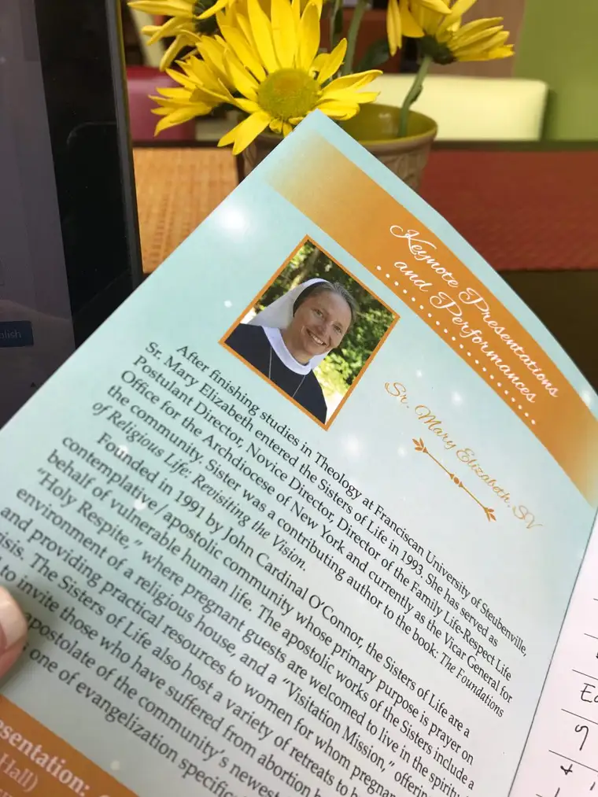
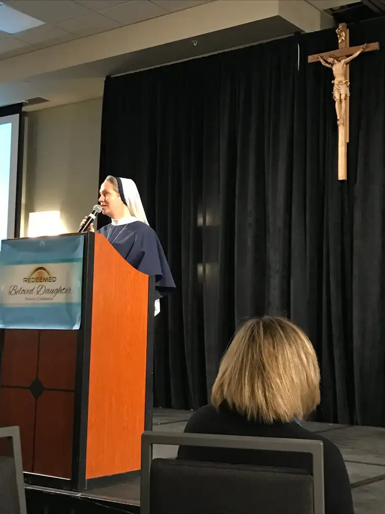

My diocese, the Diocese of Fargo in eastern North Dakota, recently hosted its inaugural women’s conference. Following a Redeemed Men’s conference that took place in the fall, the Redeemed Women’s “Beloved Daughter” event was tailored to the unique nature of women.
The opening keynote was given by Sister Mary Elizabeth, SV, of the Sisters of Life order, based in New York City. If you’ve ever been in the presence of these dear women, you will notice something special. They exude joy, and it is extremely attractive.
Sister Mary Elizabeth was no exception, and began her talk reminding us of the basics. “In every heart, there is a hunger to be chosen…to be cherished,” she said. “Every person is loved into existence by God.”
It didn’t take long before tears began welling up in my eyes; not tears of sadness, but gratitude and long-forgotten recognition of truth.
“Each of us is a result of the thought of God,” she continued. “Each of us is necessary…and continually held in existence by God.”
These beautiful realities washed over the parched souls of the 700 women in attendance; words that, as women bent on serving others — often before ourselves — we seemed desperate to hear.

To offset the intensity, Sister, like all good speakers, brought in a few personal stories, including a few that prompted giggles. For example, she shared about the time she and some of her sisters were at an elementary school, and a little girl leaned over and asked one about her habit. “Why are you wearing that?” she asked, pointing to her head. Sister grasped to explain, in terms a young lady would understand, the nature of her fashion apparel. Finally, she said that she was married to Jesus, and her habit was like a wedding gown. The little girl took a long look at her, and then, with scrutinizing eyes, exclaimed, “He chose YOU??!”
Indeed, sister continued, in discovering our feminine nature, our deepest identity, we confront the reality that at bottom, we are “bearers of life-giving love.”
“This is our gift and our call,” Sister said. “It’s the way we will find purpose in our lives.”
She also told of a story she read about in Matthew Kelly’s “Rediscover Jesus,” about a man, a lapsed Catholic, who ended up sitting by Mother Teresa of Calcutta on a plane. After talking with her throughout the flight, and observing the actions of Mother and the other sisters, he remarked, “I feel as if I just met God’s daughter.”
We are all this, Sister reminded; through baptism, we are “daughters of the living God” whose “spirit abides in us.” And it is pure gift, she added. “Nothing can take it away.”
God is constantly looking upon us with love, she noted, and in turn, we offer back to others and to God “the love that our unique heart can give to him.”
“Most fundamentally, my identity isn’t something I post on Facebook,” she added, nor is it our attributes or even our circumstances. Rather, it is who we are at our core. Through delving into this, she said, we discover that woman is “the crowning glory of creation,” and the world needs us — every laste one of us — for a unique, live-giving purpose.
To access this, should we forget, Sister suggested spending time in Eucharistic Adoration. In “sitting under the merciful gaze of Jesus,” we can rediscover our truest identity, as did a young, wounded woman who stayed for a time with the sisters.
“Jesus transforms our wounds,” Sister said. “His mercy will always be greater than any sin.”
Q4U: In gazing upon you today, what does Jesus want to tell you most of all?